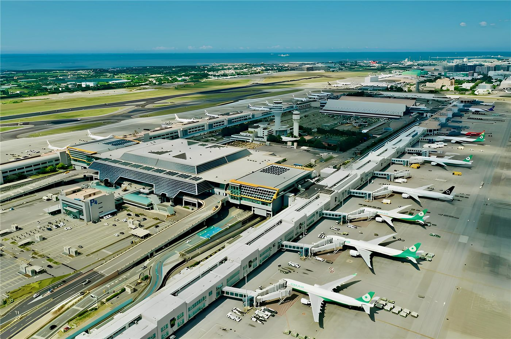

橋한국
한국한국, 북중미 월드컵 조별리그 탈락 확정… ‘경우의 수’ 모두 지워졌다
마지막 희망이던 우즈베키스탄마저 콩고민주공화국에 무릎을 꿇으면서, 홍명보호의 32강(16강) 진출 가능성은 완전히 사라졌다. 48개국 확대 체제의 첫 대회에서 한국은 1승 2패, 조 3위 경쟁에서도 밀려 짐을 쌌다.
마지막 희망이던 우즈베키스탄마저 콩고민주공화국에 무릎을 꿇으면서, 홍명보호의 32강(16강) 진출 가능성은 완전히 사라졌다. 48개국 확대 체제의 첫 대회에서 한국은 1승 2패, 조 3위 경쟁에서도 밀려 짐을 쌌다.

국내 상장지수펀드(ETF) 순자산이 빠르게 불어나 코스닥 시가총액을 처음으로 앞질렀다. 코스닥이 30년 가까이 제자리걸음을 하는 사이, 손쉬운 분산투자 수단으로 자금이 쏠린 결과다.

공시가격이 오르면서 종합부동산세 부담이 3년 만에 다시 늘어날 전망이다. 보유세 강화 기조가 이어질 경우 상승 폭이 더 커질 수 있다는 관측이 나온다.

국내 인공지능(AI) 연합체 ‘K-AI 얼라이언스’ 회원사가 50개로 늘었다. SK 측은 “미국과 협력하면서도 핵심 기술은 스스로 키워야 한다”며 글로벌 AI 플랫폼 본격화를 예고했다.

전북의 한 단체장이 엔비디아 젠슨 황 최고경영자에게 친서를 보내 새만금 투자 협력을 제안했다. 첨단산업 유치 경쟁이 지방정부 차원으로 확산되는 모습이다.

호남권 반도체 클러스터 조성을 둘러싸고 ‘선심성 매표’라는 비판과 ‘수도권 집중 완화를 위한 균형발전’이라는 옹호가 맞선다. 핵심은 입지·인력·전력 등 실질 경쟁력이라는 지적이 나온다.

인천시가 민선 9기 출범 취임식을 대폭 간소화하기로 했다. 민생경제 부담과 재정 여건을 고려한 조치로, 여러 지자체가 비슷한 흐름을 보이고 있다.

전남과 광주를 아우르는 통합 특별시가 출범한다. 다만 경찰 조직은 명칭만 바뀔 뿐 조직·기능은 그대로 유지돼, 통합의 실질 효과는 차차 확인될 전망이다.

경북 예천의 한 돼지농장에서 구제역 양성으로 나왔던 검사 결과가 음성으로 정정되면서 관련 방역 조치가 해제됐다. 초기 대응과 재검의 중요성이 다시 확인됐다.

경북 구미시가 ‘대한민국 1호 K-푸드로드’로 선정됐다. 대표 먹거리 거리인 ‘송정맛길’의 경쟁력을 키워 미식 관광 거점으로 육성한다는 구상이다.

중국에서 7월부터 시행되는 새로운 규정들이 발표됐다. 소비자 보호와 일상생활에 직접 닿는 정책이 다수 포함돼 관심을 모은다.

중국이 자국산 대형 수송기 윈(運)-20 계열 등 3종의 ‘대형(大運)’ 기종이 함께 비행하는 영상을 공개했다. 항공·물류 수송 역량을 보여주는 장면으로 소개됐다.

중국 닝보-저우산항의 류헝(六橫)공로대교 2기 공사가 속도를 내고 있다. 세계적 물동량을 처리하는 항만의 연결성을 강화하는 핵심 인프라로 꼽힌다.

중국이 고원지대 철도 운영에 위성측위와 원격제어를 결합한 ‘과학 두뇌’ 시스템을 적용했다고 소개했다. 험준한 환경에서의 안전 운행을 뒷받침하는 기술이다.

중국과 러시아 군용기가 일본해(동해) 상공에서 연합 공중순찰을 실시했다. 양국이 정례적으로 진행해 온 군사 협력의 연장선으로 소개됐다.

베네수엘라를 덮친 지진 이후 현지 화교화인 사회가 500t에 달하는 구호물자를 기부하며 빠르게 구호에 나섰다. 재난 앞에서 빛난 동포 연대가 주목받는다.

중국이 교육·과학기술·인재를 하나로 묶어 추진함으로써 혁신을 촉진한다는 정책 기조를 거듭 강조했다. 인재 양성과 연구·산업의 선순환을 노린 구상이다.

중국이 ‘규모화 혁신’을 새로운 성장 동력으로 제시했다. 방대한 시장과 산업 사슬을 결합해 기술을 빠르게 상용화하는 모델을 ‘중국 기회 2.0’으로 부른다.

중국의 전력 사용 규모가 40억㎾를 넘어섰다고 관영매체가 전했다. 전력 부하 곡선을 ‘강하게 뛰는 심전도’에 빗대며 경제 활동의 활력을 보여주는 지표로 소개했다.

여행하며 배우는 ‘여행 흥미반(旅游兴趣班)’이 중국 청년층에서 인기를 끌고 있다. 취미·체험 학습과 여행을 결합한 새로운 여가·소비 방식으로 자리 잡는 모습이다.

대만 대중음악 최고 권위의 제37회 금곡장 시상식에서 차이이린(蔡依林)이 가왕(여자 최우수가수)을 거머쥐었다. 시각장애 가수 샤오황치(蕭煌奇)는 5개 부문을 휩쓸며 “모든 상금은 아내에게”라고 화답했다.

타이베이(台北) 시장 보궐선거에 나선 한 후보가 유서 깊은 룽산쓰(龍山寺)를 찾아 참배했다. 전통 사찰을 찾는 행보는 대만 선거의 단골 표심 공략 풍경이다.

연일 쏟아진 폭우로 대만 남부 핑둥(屛東)의 학교 38곳이 침수 등 피해를 입었다. 집계된 손실액만 1,760만 대만달러(약 7억여 원)를 넘어섰다.

사흘간 이어진 폭우로 대만 남부 쩡원(曾文)댐에 7천만t의 물이 한꺼번에 유입됐다. 인근 런이탄(仁義潭)도 곧 만수위에 도달할 전망이다.

신베이(新北) 싼샤(三峽)의 ‘중정(中正) 육교’가 역할을 마치고 철거됐다. 신베이시 승격 이후 정비된 60번째 보행 육교로 기록됐다.

대만에 폭우를 뿌린 정체전선이 북상하는 가운데, 하나 이상의 열대 요란이 발달할 가능성이 제기됐다. 기상 전문가는 “지속적인 관찰이 필요하다”고 밝혔다.

타오위안(桃園) 핑전(平鎮)에 ‘아동22공원(兒22公園)’ 신축 공사가 마무리됐다. 9월 정식 개방을 앞두고 주민들의 새로운 휴식·놀이 공간이 늘었다.

미쓰비시의 신형 다목적차(MPV) ‘델리카 D:6’가 플러그인 하이브리드(PHEV)를 주력으로 내년 출시될 것으로 전망된다. 대만 시장에도 도입될 가능성이 거론된다.

대만에서 한국행 항공편을 탄 일부 승객이 보조배터리를 압수당했다며 혼란을 호소했다. 휴대용 배터리 기내 반입 규정이 나라·항공사마다 달라 사전 확인이 필요하다.

대만 코스트코가 게이밍 미니PC를 판매하며 가격이 공개돼 화제다. 온라인에서는 “차라리 게이밍 노트북이 더 실속 있다”는 의견 등 구매 셈법을 둘러싼 갑론을박이 이어졌다.

잉글랜드가 파나마를 2-0으로 꺾고 조 1위로 16강(32강 라운드)에 올랐다. 해리 케인은 이번 대회 통산 득점을 더해 잉글랜드 역대 월드컵 최다 득점 기록을 세웠다.

포르투갈이 콜롬비아와 0-0으로 비기며 조 2위로 토너먼트에 올랐다. 크리스티아누 호날두는 90분 내내 득점을 올리지 못했고, 메시-호날두의 ‘8강 맞대결’ 시나리오도 무산됐다.

크로아티아가 가나를 2-1로 꺾고 토너먼트에 올랐다. 베테랑 루카 모드리치가 중원에서 경기를 조율하며 승리를 이끌었다.

콩고민주공화국이 우즈베키스탄을 역전으로 꺾고 사상 처음 월드컵 토너먼트에 올랐다. 이 결과는 한국의 조별리그 탈락을 확정 짓는 결정적 변수가 됐다.

우루과이가 조별리그에서 탈락한 가운데 선수단 내 불화설까지 불거졌다. 협회는 선수단 귀국 전세기를 취소하며 사실상 징계성 조치를 취했다.

일본 이와테(岩手)현에서 사흘간 두 차례 지진이 발생했다. 새벽에는 규모 6.1의 강한 지진이 일어났고, 기상청은 1주일 안에 추가 강진 가능성에 주의하라고 당부했다.

미국 켄터키주에서 폭우로 인한 홍수로 최소 4명이 숨졌다. 주지사는 비상사태를 선포하고 구조·복구에 나섰다.

미국 매사추세츠주에서 월드컵 경기가 끝난 뒤 총격이 발생해 최소 4명이 총상을 입고 병원으로 옮겨졌다. 경찰이 경위를 조사 중이다.

이란 혁명수비대가 휴전 합의 위반이 계속될 경우 “모든 외교 절차를 중단하겠다”고 경고했다. 중동 정세의 긴장이 여전히 가시지 않고 있다.

미국과 이란의 정전 이후 처음 맞는 아슈라절(阿舒拉節)을 맞아 시아파 무슬림들이 추모 의식을 이어갔다. 긴장이 남은 가운데 평온을 기원하는 분위기였다.

국제 신용평가사 S&P가 미국의 국가신용등급을 ‘AA+’로 유지하고 전망을 ‘안정적’으로 제시했다. 경제 회복력과 인공지능(AI) 투자 흐름을 긍정 요인으로 꼽았다.

여름이 본격화되기도 전에 유럽에 또다시 폭염이 닥치며 에너지 수급 문제가 커지고 있다. 냉방 수요 급증과 전력 공급 사이의 균형이 시험대에 올랐다.

이례적 폭염으로 스위스 알프스의 빙하가 빠르게 녹아내리고 있다. 빙하 융해는 수자원·재해 위험과 직결돼 기후 위기의 경고로 받아들여진다.

일본 반도체 기업 키옥시아의 상장으로 직원 약 600명이 평균 100억 원대 자산을 보유하게 됐다는 분석이 나왔다. 반도체 호황과 IPO 효과가 맞물린 결과다.

미국 워싱턴DC의 상징적 명소인 링컨기념관 앞 ‘반영지(reflecting pool)’가 보수에 들어간다. 노후 시설을 정비해 관광·휴식 공간을 개선하려는 조치다.

졸업생 취업·영주 경로를 나란히. 화인 독자를 위한 실전 해설.

체류자격·기한·서류는 거주지와 자격별로 다르다. 미리 챙기면 불이익을 피할 수 있다.

인천화교협회가 여권 발급과 각종 인증 수수료의 인상을 예고했다. 행정 비용이 오르면 재한 화교 가정의 실생활 부담으로 직결돼, 미리 일정을 챙기라는 당부가 나온다.

부산화교중학(부산화교중고등학교)이 2026학년도(중화민국 115학년도) 신입생과 편입생 모집 공고를 냈다. 1차 접수는 7월 10일까지, 2차는 8월 10~14일이다.

인천화교 중산중학·소학이 개교 125주년을 맞아 교경(校慶) 행사를 열었다. 한 세기를 넘긴 화교 교육의 전통과 3개 언어·민속 교육의 성과가 한자리에 모였다.

한성화교협회가 봄철 교유대회를 열어 화교 동포 650여 명이 한자리에 모였다. 행사장은 온정과 친목의 열기로 가득했다.

인천화교협회가 영주권(F-5)을 가진 외국인의 체류카드(영주증) 10년 주기 갱신을 안내했다. 유효기간이 다가온 동포는 만료 전 갱신 신청을 해야 불이익을 피할 수 있다.

한국 축구의 간판 이강인의 아틀레티코 마드리드(ATM) 이적이 마무리 단계에 들어갔다는 보도가 나왔다. 이르면 다음 주 공식 발표가 이뤄질 수 있다는 전망이다.

아시아 정상급으로 평가받는 도쿄의 클래식 공연을 10만 원대로 즐기는 방법이 소개됐다. 합리적 가격으로 수준 높은 오케스트라 무대를 찾는 관객이 늘고 있다.

중국 매체가 ‘에어컨 한 대’를 예로 들어 중국과 유럽연합(EU) 간 무역흑자의 구조를 풀이했다. 무역 불균형을 둘러싼 논의 속에서 상호 호혜의 길을 강조했다.

중국 브랜드 마이엑스트로(Maextro) ‘쭌졔(尊界)’가 최신 플래그십 다목적차(MPV) V800을 공개했다. 호화로움이 롤스로이스에 견줄 수준이라는 평가가 나온다.

국제 금값이 연이은 악재 속에 바닥을 다지고 있다. 다만 기관투자가들은 장기적으로 각국 중앙은행의 매수세가 가격을 떠받칠 것으로 본다.

대만 출신 야구선수 이호우가 메이저리그(MLB)에 복귀한 뒤 4할대 타율을 이어가며 강한 인상을 남기고 있다. 대만 선배의 기록까지 경신했다는 소식이다.

부산 도심에서 벌어진 조직 폭력배 간 보복 폭행 사건으로, 신20세기파 조직원이 징역 1년 10개월을 선고받았다. 법원은 조직적 폭력에 엄정한 책임을 물었다.

인천국제공항이 6·25 전쟁 참전용사 1,000가구에 생필품을 담은 ‘희망박스’를 전달하고 말벗 봉사에 나섰다. 보훈의 의미를 되새기는 나눔 활동이다.

드론(무인기)이 물에 빠진 사람을 찾아내는 인명 구조 임무에 투입되고 있다. 첨단 기술이 재난·안전 현장에서 사람의 눈과 손을 돕는다.

강원 동해시가 다른 지자체 종량제봉투를 계속 쓰는 문제를 막기 위해, 7월부터 전입세대를 대상으로 인증마크 제도를 도입한다. 생활 행정의 작은 변화다.

대만의 후뎨구(蝴蝶谷) 폭포 산책로에서 낙석이 발생해 4명이 숨지고 1명이 다쳤다. 악천후 속 산행 안전이 다시 도마에 올랐다.

대만 타이둥(台東) 활수호(活水湖)의 전력 케이블을 훔친 절도범에게 법원이 약 300만 대만달러를 배상하라고 판결했다. 공공시설 절도에 무거운 책임을 물은 사례다.